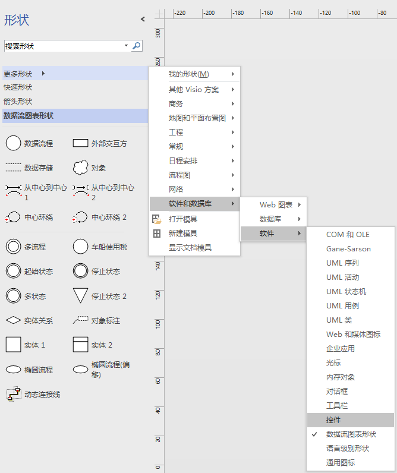
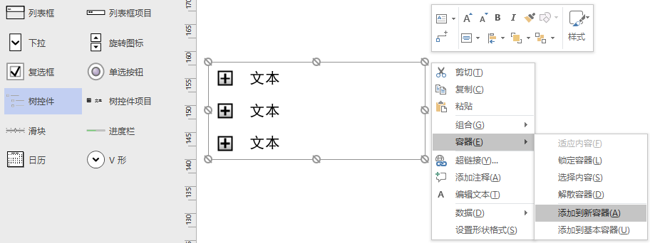
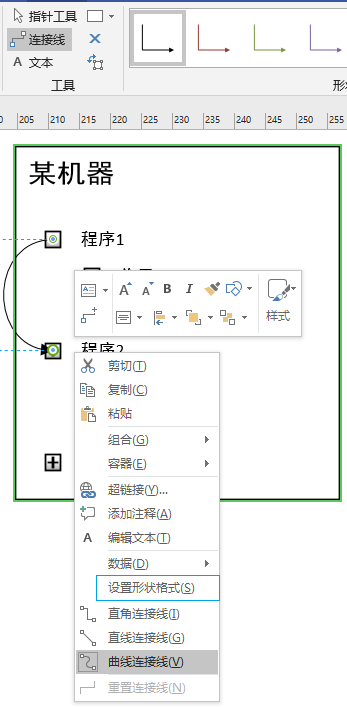
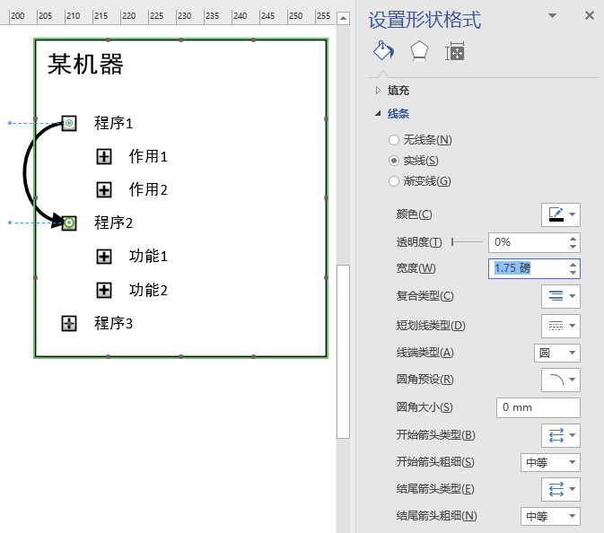

2018-07-11 MyDefaultCategory Visio画图 摘要暂略。使用Visio的时候，有时会发现一些好的画图方式，过了一段时间之后，结果忘记怎么搞的了。于是准备把它记下来。 Visio里的树控件用着不错调取方式：更多形状=>软件和数据库=>软件=>控件=>树控件。 将树控件添加到新的容器里 设置连接线为曲线连接线 对连接线进行设置形状格式 Newer Linux的man相关备忘 Older git的一些命令备忘